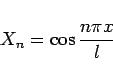

Inhalt Index DeskTop Bronstein

 Differentialgleichungen Partielle Differentialgleichungen Lineare partielle Differentialgleichungen 2. Ordnung Integrationsmethoden für lineare partielle Differentialgleichungen 2. Ordnung
Differentialgleichungen Partielle Differentialgleichungen Lineare partielle Differentialgleichungen 2. Ordnung Integrationsmethoden für lineare partielle Differentialgleichungen 2. Ordnung


Stabschwingungsgleichung wird die lineare partielle Differentialgleichung 2. Ordnung vom hyperbolischen Typ genannt, mit deren Hilfe die longitudinalen Schwingungen eines Stabes beschrieben werden, dessen eines Ende frei ist und auf dessen zweites, eingespanntes Ende im Anfangszeitpunkt eine konstante Kraft p wirkt. Zu lösen ist die gleiche Differentialgleichung wie im Beispiel Saitenschwingungsgleichung, d.h.
| (9.91a) |
mit den gleichen Anfangs-, aber nunmehr inhomogenen Randbedingungen:
| (9.91b) |
| (9.91c) |
| (9.91d) |
Diese Bedingungen können durch die homogenen Bedingungen
| (9.91e) |
ersetzt werden, indem für u die neue unbekannte Funktion
| (9.91f) |
eingeführt wird. Allerdings wird dann die Differentialgleichung inhomogen:
| (9.91g) |
Zur Lösung wird die Methode der Variablentrennung verwendet. Die Lösung wird in Form der Summe z =v+w gesucht. Dabei genügt v der homogenen Differentialgleichung sowie den Rand- und Anfangsbedingungen für z, d.h.
| (9.91h) |
während w der inhomogenen Differentialgleichung genügt und die verschwindenden Anfangs- und Randbedingungen erfüllt. Daraus ergibt sich  . Eingehen in die Differentialgleichung mit dem Produktansatz
. Eingehen in die Differentialgleichung mit dem Produktansatz
| v =X(x)T(t) | (9.91i) |
| (9.91j) |
Integration der Differentialgleichung für X und Einsetzen der Randbedingungen X'(0) =X'(l) =0 liefert die Eigenfunktionen
|  | (9.91k) |
sowie die dazugehörigen Eigenwerte
 |
(9.91l) |
Durch das gleiche Vorgehen wie in Beispiel Saitenschwingungsgleichung erhält man schließlich
| (9.91m) |
wobei an und die Koeffizienten der FOURIER-Reihenentwicklung für die Funktionen und im Intervall (0,l) sind.